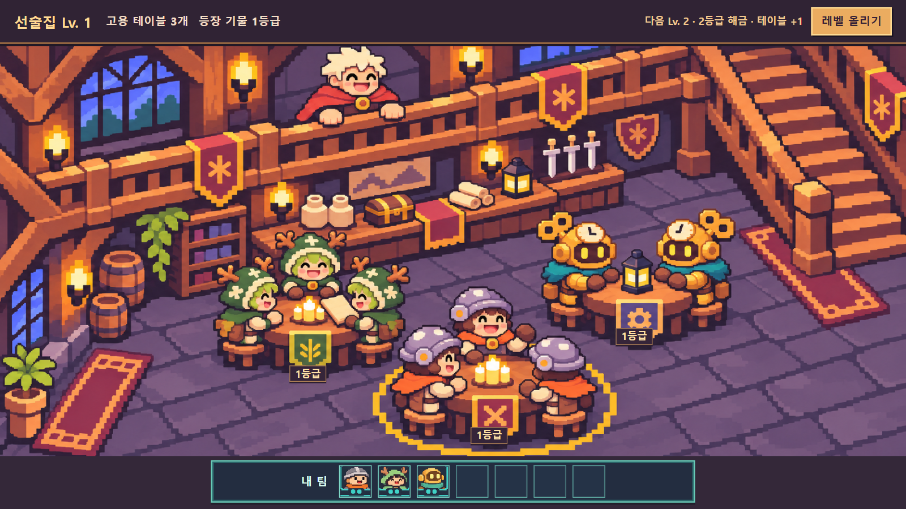
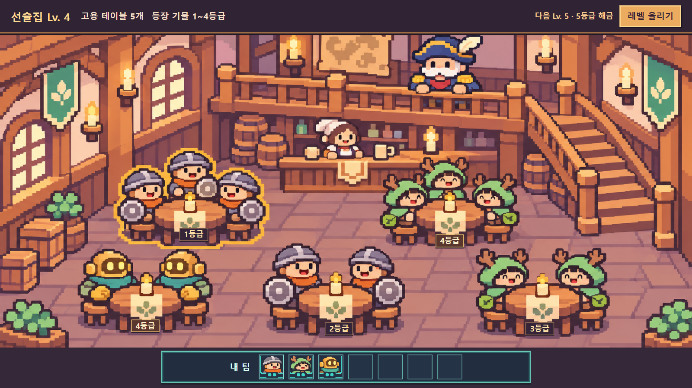
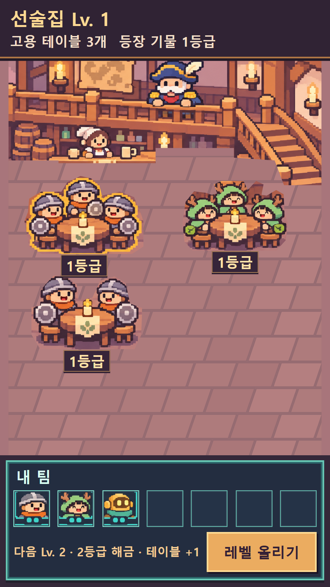
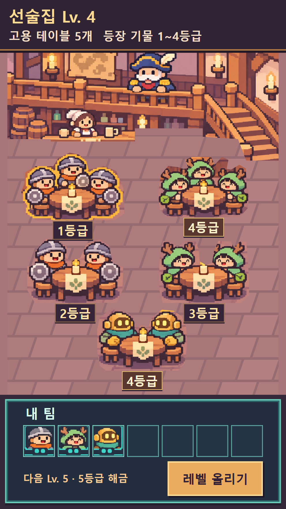
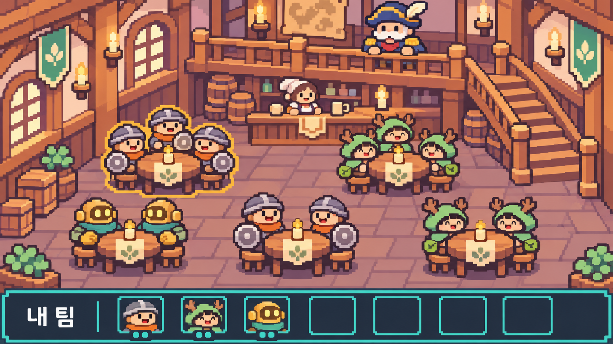

선술집 레벨과 고용 화면
레벨을 올리면 더 높은 등급의 기물이 등장할 수 있다. 고용 테이블은 2레벨과 4레벨에서 한 개씩 추가된다.
하스스톤 전장·스타 선술집·롤토체스·클래시 로얄 UI 비교
PC 레퍼런스 · 16:9
상단 한 줄에 선술집 상태와 레벨업을 모으고, 넓어진 가운데에 고용 테이블을 배치했다.




모바일 레퍼런스 · 9:16
레벨 올리기를 하단으로 옮기고 높이를 48px로 키웠다. 내 팀 7칸은 44px씩 한 줄에 놓고, 등급 라벨을 키웠다.




기존 선술집 도트 아트와 레벨 HUD를 합성한 레퍼런스다. PC Lv. 1은 3테이블 v6 시안을 사용해 Lv. 4와 카메라 각도가 다르다.
런 계열과 선술집 레벨 미리보기
이번 런의 일반 계열 5개
추가 대장 전용 계열
레벨별 미리보기
두 화면의 레벨과 등장 계열을 함께 확인할 수 있습니다. 테이블은 계열과 등급의 예시이며, 3레벨부터 초안의 대장 전용 기물을 한 칸에 표시합니다.
PC용 · 16:9
모바일용 · 9:16
2층 대장 · 난간오른쪽 계단1층 카운터
내 팀
